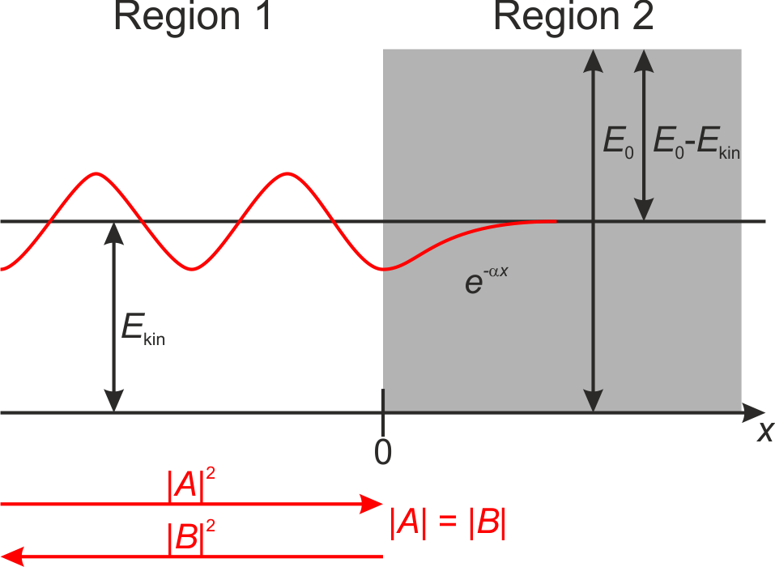
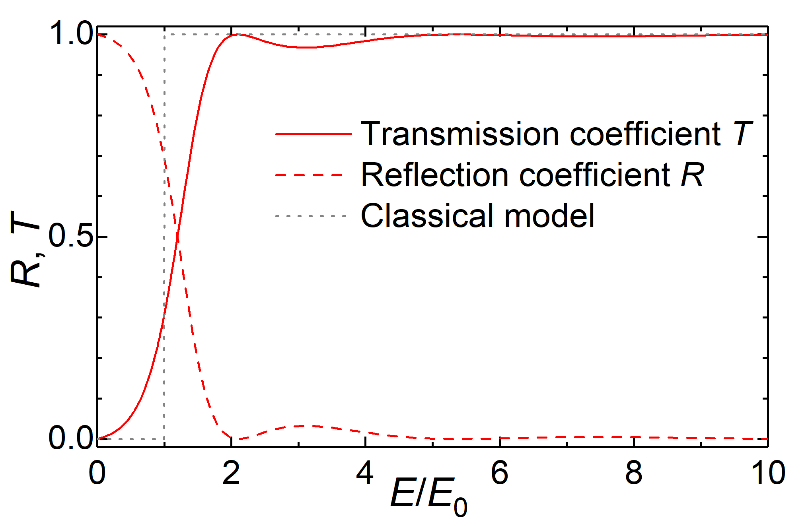

This page was generated from `/home/lectures/exp3/source/notebooks/L26_AMA/L26_potential_barrier.ipynb`_.

A potential barrier¶
The free particle with \(E_{\mathrm{pot}} = 0\) as we discussed it previously might propagate in \(+x\) direction and enter a region with a different potential \(\phi \left( x \ge 0 \right) =\phi_0 > 0\). Thus, the particle experiences a shift in its potential energy from \(E_{\mathrm{pot}} = 0\) for \(x < 0\) to \(E_{\mathrm{pot}} = E_0\) for \(x \ge 0\). This scenario is similar to a light wave at the air-glass interface.
In order to solve the Schrödinger equation for this problem, we split the space \(-\infty < x < \infty\) into two regions. In region 1, where \(E_{\mathrm{pot}} = 0\), we can state the general solution for the one-dimensional stationary Schrödinger equation as
Because \(E_{\mathrm{pot}} = 0\) and \(E = E_{\mathrm{kin}} + E_{\mathrm{pot}}\), we can simplify \(E = E_{\mathrm{kin}} = p^2/\left( 2 m \right) = \hbar^2 k^2 / 2 m\) and get
The general solution of \(\psi\left( x \right)\) has the shape
and the time-dependent solution for the wave function
is a superposition of a plane wave propagating in \(+x\) direction and a plane wave propagating in \(-x\) direction. Here, the wave with coefficient \(A\) in propagation along \(+x\) direction and the wave with the coefficient \(B\) is propagation along the \(-x\) direction. The coefficients \(A\) and \(B\) are the amplitudes of both waves and are determined on the basis of boundary conditions. If we now concentrate again on our potantial barrier, we can state for the position-dependent solution in region 1
For region 2 where \(E_{\mathrm{pot}} = E_0\) we can state the Schrödinger equation as follows
with \(\alpha = \sqrt{2m\left(E_0 - E \right)}/\hbar\). The solution for region 2 then reads as
and the general solution for the position-dependent factor of the one-dimensional stationary Schrödinger equation reads as
The general solution does represent a solution of the Schrödinger equation for the whole space \(- \infty < x < \infty\) if and only if \(\psi \left( x \right)\) is continuously differentiable over the whole space. Otherwise the second derivative $ \partial`^2 :nbsphinx-math:psi`:nbsphinx-math:left`( x :nbsphinx-math:right`) / \partial `x^2$ in the Schrödinger equation will be undefined. From this prerequisite the boundary conditions at :math:`x = 0 directly follow,
and
The case \(0 < E < E_0\)¶
In the case \(E<E_0\), \(\alpha\) is a real number. Moreover the coefficient \(C\) has to be \(0\), otherwise \(\psi_{\mathrm{2}}\) will approach \(+\infty\) for \(x \longrightarrow +\infty\). From the boundary conditions we get
and thus the wave function in region 1 (\(x < 0\)) reads as
Because we do know the wave function and its amplitudes, we can calculate the reflection coefficient as the ratio of the squared reflected and initial waves,
From this result it is evedent that in the case \(E < E_0\) every particle is reflected at the barrier as to be expected in the framework of classical mechanics. However, the particles do not change their direction of propagation diretly at the edge of the barrier (\(x = 0\)). Instead, they are able to intrude into region 2 (\(x \ge 0\)) to some extend, even though their energy is not sufficient ( if discussed in the classical framework).
The probibility density \(P \left( x \right)\) to find a particle at the position \(x\) (with \(x > 0\)) then is given through
where \(k^2 = 2 m E / \hbar^2\) and \(k_0^2 = 2 m E_0 / \hbar^2\). We see, at a depth of penetration of \(x = 1/\left(2\alpha\right)\) the propability density to find the particle at this position is decreased about the fractor \(1/\mathrm{e}\) compared to the propability density at \(x=0\). This phenomenon we allready know as evanescent waves during total internal reflection.

Fig.: A wave with a kinetic energy :math:`E_{mathrm{kin}}` approaches a potential barrier :math:`E_0` with :math:`E_0 > E_{mathrm{kin}}`. The wave is completely reflacted (amplitudes :math:`left|Aright|` = :math:`left|Bright|`), but intrudes the barrier where the amplitude decays exponentially.
The case \(0 < E_0 < E\)¶
In this case the kinetic energy is greater than the shift in the potential energy. In the framework of classical mechanics, every particle is allowed to enter region 2 (\(x>0\)) and to propagate there, but with a reduced velocity due to their decreased kinetic energy (\(E_{\mathrm{kin}} = E - E_0\)).
In the framwork of matter waves the parameter \(\alpha\) now is an imaginary number. Therefore, we introduce a real number,
The solution for the position-dependent amplitude \(\psi_2 \left( x \right)\) in region 2 then reads as
whereas the solution \(\psi_1 \left( x \right)\) for the stationary equation in region 1 remains the same as stated above.
As in the case of the first example, we state the boundary conditions at \(x = 0\) as
and
Furthermore, in region 2 there is no wave propagating along the \(-x\) direction since there is no boundary located in region 2 in order to reflect the wave. Thus, we can set \(C = 0\). From the boundary conditions it follows
and the wave functions read as
For the reflection coefficient it follows
and we see, even though the kinetic energy of our pairticle is sufficient enough to overcome the potential barrier, a part of the wave is reflected. Furthermore, since the wavenumber is directly connected to the refrective index \(k = n_1 \cdot k_0\) and \(\kappa = n_2 \cdot k_0\), we can immediately calculate the reflectance,
In order to calculate the transmission coefficient, or how many particles pass a unit area at \(x=x_0>0\) per time devided through how many incident particles pass a unit area at \(x=-x_0<0\) per time, we have to bear in mind the different propagation velocities in region 1 and 2. The ratio of the velocities is governed by the ratio of the wavenumbers
The transmission coefficient then reads as
Moreover, it is evident that
which represents the conservation of the number of particles. Please note, for the limiting case \(E = E_0\) every exponent becomes \(0\) (\(\alpha = 0\) as well as \(\kappa = 0\)) and the reflection coefficient becomes \(R=1\).
Fig.: A wave with a kinetic energy :math:`E_{mathrm{kin}}` approaches potential barrier :math:`E_0` with $E_{:nbsphinx-math:`mathrm{kin}`} > E_0 $. The wave is partially reflected and partially transmitted.
The case \(E_0 < 0 < E\)¶
In this case the potential barrier is negative (\(E_0 < 0\)). In the framework of classical mechanics, every particle is allowed to the region of teh barrier (\(x>0\)) and to propagate there with an increased velocity due to their increased kinetic energy (\(E_{\mathrm{kin}} = E - E_0\)). This situation is analoque to the transition of a light wave from a medium with a higher index of refraction into a medium with a lower index.
Fig.: A wave with a kinetic energy of :math:`E_{mathrm{kin}}` approaches a potential step with :math:`E_0 < 0`.
As in the cases examples above we again split the our space \(-\infty < x < +\infty\) into two regions, namely region 1 with \(x < 0\) and region 2 with \(x \ge 0\). Furthermore, we can allready state the general solutions for the position-dependent amplitude $:nbsphinx-math:psi `:nbsphinx-math:left`( x \right) in both regions, namely
where
From the boundarey conditions
we get
respectively. In addition, we set \(C = 0\), because therre is no wave to be expected propagating along the \(-x\) direction in region 2. As a consequence we can determine the coefficients as
being identical to the above case for \(0 < E_0 < E\). As a consequence the reflection coefficient,
and transmission coefficient
obey the identical equations. However, bear in mind that \(E_0 < 0\) and thus \(\kappa\) is real number with
and \(\kappa \ge k\). In addition, the transmission coefficient is non-zero for e wide range of the relative energy \(E/E_0\) which is in stark contradiction to classical mechanics.
Fig.: (left) The transmission coefficient :math:`T` and reflection coefficient :math:`R` in dependence of the particle’s relative energy :math:`E / E_0` in the case of a negative potential step :math:`E_0 < 0`. (right) :math:`1 - T` in a logarithmic scale. Note that :math:`T` is non-zero for a wide range of energy.
</figure
The tunnel effect or quantum tunnelling¶
In order to discuss the tunnel effect we construct a potential barrier with a finite width \(\Delta x = a\). Thus, for the regions \(x < 0\) and \(x > a\) the potential energy vanishes \(E_{\mathrm{pot}} = 0\), whereas for \(0 \le x \le a\) the potential energy exhibit \(E_{\mathrm{pot}} = E_0\). Moreover, now with split the definition range \(-\infty < x < +\infty\) into three region, namely
For every region we state the genernal solution of the position-dependent amplitude \(\psi \left( x \right)\) of the wave function as we have derived them previously
and calculate teh boundary conditions at at \(x = 0\),
and in additon at \(x = a\),
In addition there is no potentially reflecting interface in region 3 at a position \(x > a\). Thus, we can exclude a wave propagating along \(-x\) direction and set
From the previous cases we know that at the first boundary (\(x=0\)) the incident wave propagating along \(+x\) direction in region 1 is (partially) reflected. On the basis of the propagation directions we can explicitly write down the incident wave as \(\psi_{inc} = A \cdot \mathrm{e}^{+i k x}\), the reflected wave as \(\psi_{ref} = B \cdot \mathrm{e}^{-i k x}\), and the wave transmitted through the barrier propagating along \(+x\) direction in region 3 as \(\psi_{trans} = A^{\prime} \cdot \mathrm{e}^{+i k x}\). In order to calculate the transmission probability or tunneling probability we have to know how much intensity from the incident wave reaches the backside of the barrier,
Please not, the particular values for the speed of propagation at either side of the barrier are identical and will result in a ratio of \(1\).
Fig.: A wave with a kinetic energy of :math:`E_{mathrm{kin}}` approaches a potential step with :math:`E_{mathrm{kin}} < E_0`. Since the width of the potential is finite, the wave mighttunnel** through the barrier. At the other side amplitude is reduced which reflects a reduced propability density. The energy, however, is conserved.**
From the boundary conditions we get
which means we four equation in order to determine five constants. However, we are not exactly seeking for the parameters, but rahter for a ratio of those like \(A^{\prime}/A\). Thus, we multiply each equation from the boundary conditions with the factor \(1/A\) and have now four equtaions in order to determine the four new constants. The ectual algabra in porder to isolate \(A^{\prime}/A\) is quite lengthy. Therefore, we only state the result here,
We now calculate the transmission coeficient \(T = \left| A^{\prime}/A \right|^2\) and get
For a sufficient wide barrier (\(\alpha \cdot a \gg 1\)), we can simplify approximate the transmission probability through
It is evident that the tunneling probability strongly depends on the width of the barrier (\(a\)) but also its height (\(E_0\)) and the difference between the barrier height and the particle’s energy. If we, for example, assume a particle with an energy of \(E = E_0 / 2\) and a barrier width of half the de Broglie wavelength \(a = \lambda/2\), we get \(\alpha \cdot a = \pi\) and \(T = 0.5 / \left( 0.5 \left( 1 + \sinh^2 \left( \pi \right) \right) \right) = 7 \cdot 10^{-3}\). Thus, the probability for a particle to tunnel through the barier is \(0.7\%\). In the framework of classical mechanics, instead, no particle with \(E < E_0\) is allowed to reach the space behind the barrier and thus \(T_{\mathrm{classic}} = 0\). In addition, if the energy of a partcile is sufficient large like \(E > E_0\), the particle is allowed to overcome the barrier ans thus \(T_{\mathrm{classic}} = 1\).

Fig.: The transmission coefficient :math:`T` and reflection coefficient :math:`R = 1-T` in dependence of the particle’s relative energy :math:`E / E_0` in the case of a rectangular potential barrier with a width of :math:`a = 3 hbar / sqrt{2 m E_0}`. Note the oscillations even for :math:`E / E_0 > 1`.
While having a closer look at the transmission and reflection coefficient we find oscillations of them even though the energy is sufficent large \(E / E_0 > 1\) in order to overcome the barrier. This behavior is completely analogous to a light wave beeing reflected at two parallel glass surfaces. We get the maximum transmission for \(\kappa \cdot a = m \cdot \pi\), which gives a de Broglie wavelength of \(\lambda = 2a/m\) and a path difference of \(\Delta s = 2 a\). Thus, at the position \(x = 0\) the wave being reflected at \(x = a\) exhibits a phase difference relative to the wave being reflected right at \(x = 0\) of \(2 \pi\). Since the wave being reflected at the potential wall (synonymously the medium with the higher refractive index) experiences a phase shift about \(\pi\), the reflected waves superimpose destructively within the whole region 1 resultin in \(R = 0\). Thus, we get \(T = 1\) in region 3. In constrast a path difference of \(\Delta s = \left( 2m + 1 \right) a\) results in constructive interference and a maximum of the \(R\) and minimum of \(T\).